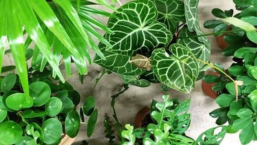
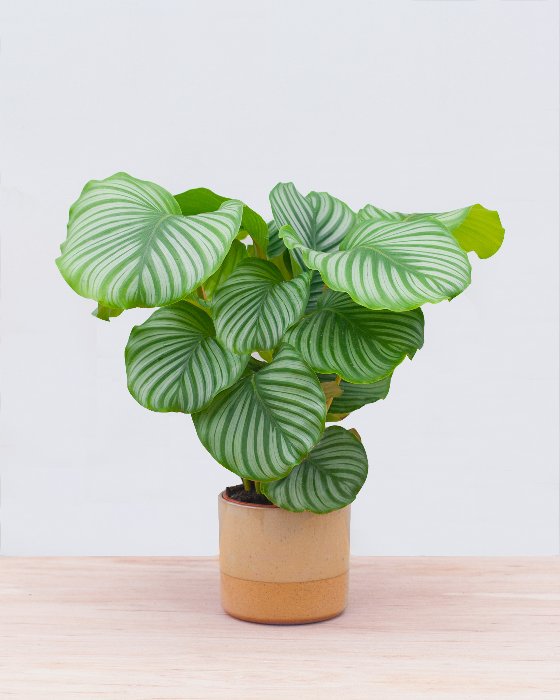

Top 5 makkelijke planten

De Calathea Orbifolia (levende plant)
Waarom de Calathea ook wel de levende plant wordt genoemd? Omdat deze grote plant ’s avonds zijn bladeren sluit en deze ’s morgens weer opent als reactie op zonlicht. Funny fact, toch? Calathea Orbifolia komt oorspronkelijk uit de tropen en heeft ronde bladeren met opvallende brede nerven. Door de bijzondere bladeren staat deze kamerplant prachtig in je interieur, máár dit is ook zo’n plant die dus goed voor de gezondheid is. Calathea’s hebben namelijk een luchtzuiverende werking.
- Standplaats: een plek zonder tocht en niet direct in het zonlicht, maar half in de schaduw.
- Water geven: de plant mag tussen 2 gietbeurten niet uitdrogen.
De Anthurium andreanum (flamingoplant)
De Anthurium komt voor in de tropische regenwouden in Midden- en Zuid-Amerika. Door de prachtige bloemen is de Anthurium een geliefde kamerplant. Deze vrolijke ‘flamingoplant’ heeft zijn naam te danken aan zijn exotische voorkomen en vanwege zijn lange stelen. Flamingoplanten willen graag veel licht, warmte en een redelijk hoge luchtvochtigheid. En als je de flamingoplant voldoende verzorgt, maakt hij het hele jaar door nieuwe bloemen aan!
- Standplaats: een lichte plek waar niet de volle zon op staat.
- Water geven: regelmatig water geven, plant mag tussen 2 gietbeurten wel wat droger aanvoelen.
De Musa Dwarf (bananenplant)
De banenplant is ook dit jaar niet meer weg te denken uit interieurs. De Musa, zoals de plant oorspronkelijk heet, is met zijn lange, dikke stengel en zijn grote, groene bladeren zeker indrukwekkend te noemen. De bananenplant lijkt heel stoer, maar eigenlijk is het best een kwetsbare plant. Oudere bladeren van deze gevoelige jongen worden namelijk snel lelijk. Probeer daarom regelmatig oudere bladeren te verwijderen.
- Standplaats: halfschaduw, schaduw.
- Water geven: de grond vochtig houden, maar voorkom dat de bananenplant met zijn wortels in het water staat.
De Monstera Deliciosa (gatenplant)
De Monstera Deliciosa, vaak ook wel de gatenplant genoemd, is een opvallende, groene kamerplant. De grote ronde bladeren met gaten erin zijn dan ook het unieke kenmerk van de tropische Monstera. En lucky you: deze tropische plant heeft een vrij simpele gebruiksaanwijzing. De gatenplant heeft namelijk niet al te veel water en zonlicht nodig. Daarnaast is de gatenplant goed voor je gezondheid: hij zuivert namelijk de lucht!
- Standplaats: halfschaduw/schaduw.
- Water geven: de plant regelmatig kleine hoeveelheden water geven: de plant mag tussen 2 gietbeurten niet uitdrogen.
De Spathiphyllum Alfetta (lepelplant)
Deze kamerplant heeft de fancy naam 'Spathiphyllum Alfetta' gekregen, maar is door de lepelvormige, witte bloemetjes beter bekend als ‘lepelplant’. De lepelplant is gewend aan warme temperaturen en een hoge luchtvochtigheid. De mooiste eigenschap van deze plant is dat hij niet kan verdrinken! Hij heeft wel veel water nodig, maar je kan hem dus nooit téveel water geven. Een fijne bijkomstigheid voor degenen zonder groene vingers onder ons.
- Standplaats: een plek half in de schaduw.
- Water geven: de grond van deze kamerplant moet goed vochtig blijven. Geef de plant dus minstens 2x per week een scheut water.